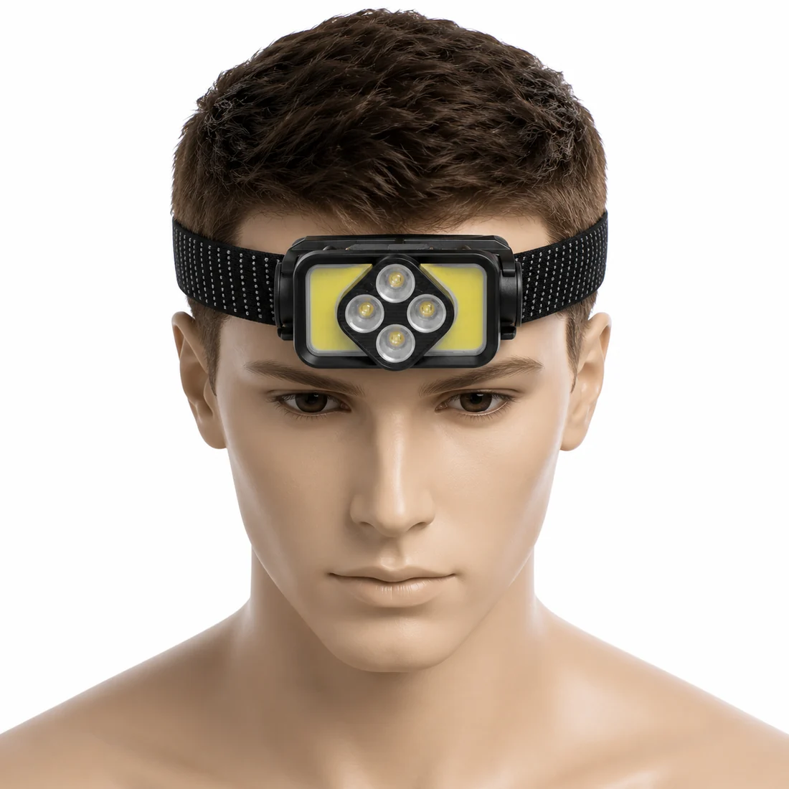
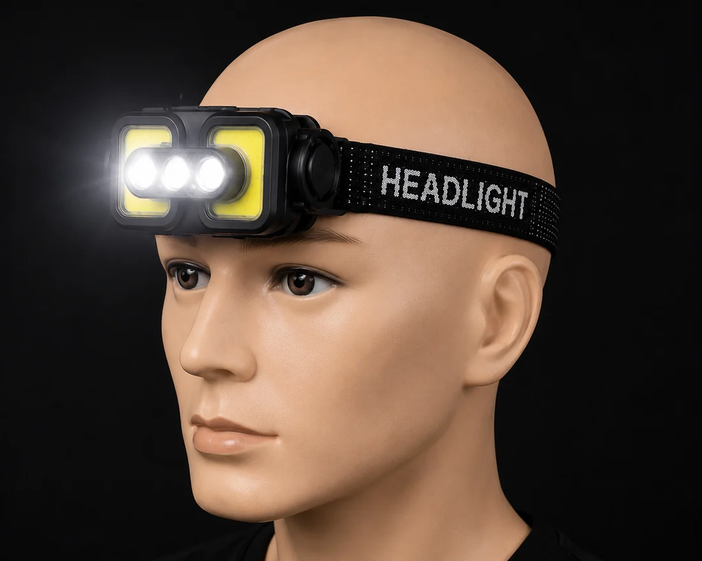
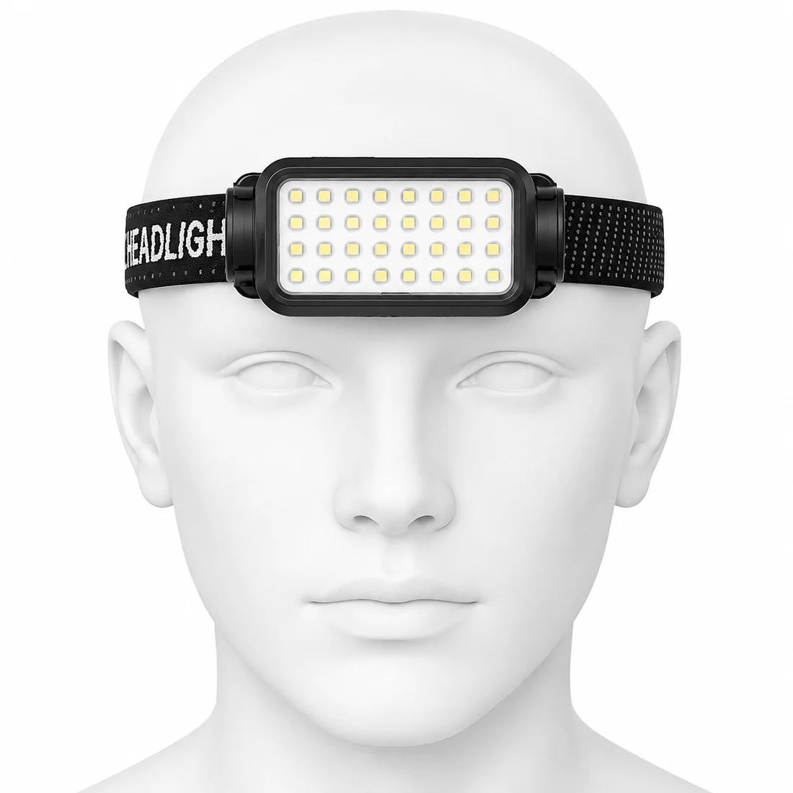
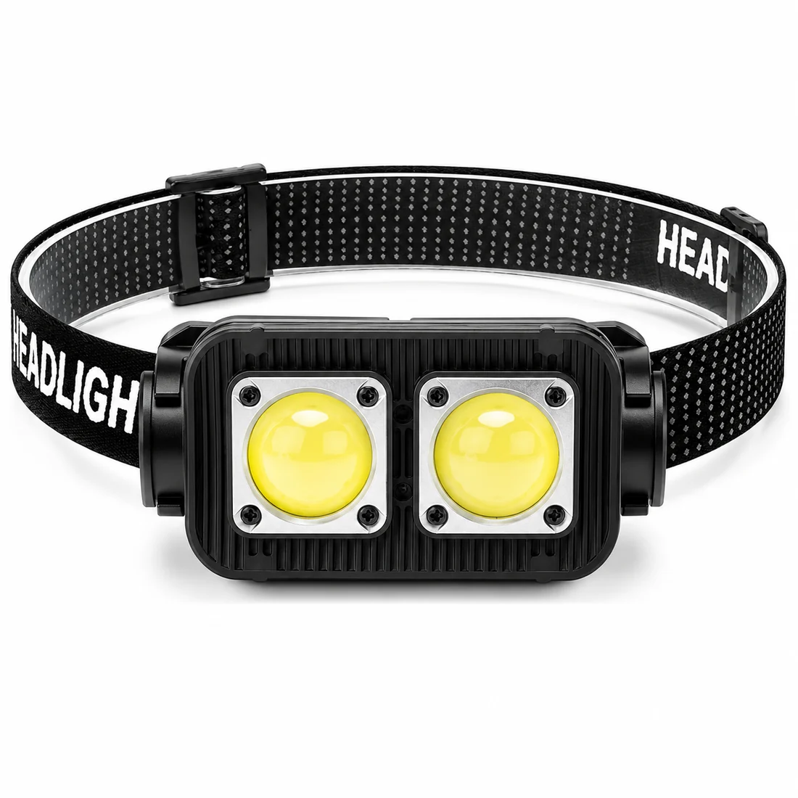

Buyer Fit
Headlamps extend the warning light catalog naturally.
For distributors and emergency kit brands, headlamps can sit beside safety flares, beacons and vehicle warning lights as practical lighting accessories.
Rechargeable Headlamp Wholesale
K-series headlamps support hands-free lighting for camping, inspection, patrol and repair. They are useful add-on products for buyers already sourcing warning lights and portable safety products.


Buyer Fit
For distributors and emergency kit brands, headlamps can sit beside safety flares, beacons and vehicle warning lights as practical lighting accessories.
Product Range
Warning-Light First
Headlamps are presented as add-on products around roadside safety, repair and outdoor service orders, keeping HENGBO positioned around warning light supply.
OEM / ODM
Logo, retail box, instruction sheet, carton marks and mixed K-series quotations can be discussed according to quantity and target market.

K-351White and warm yellow flood lighting with Type-C charging and battery display.
K-363Four XPE LEDs plus COB flood light and red light for outdoor work.

K-372COB white light, red light, red flash and sensor mode for patrol and inspection.
Procurement Support
Send target market, quantity and packaging needs. HENGBO can recommend warning lights first, then match headlamps or work lights as add-on products.
Buyer Questions
Yes. K-series headlamps can be quoted with warning lights as add-on products for emergency, repair and outdoor programs.
Logo, color box, instruction sheet and carton marks can be discussed based on order quantity and model selection.
Start with K-351 for dual-color lighting, K-363 for XPE + COB function and K-372 for COB sensor use.